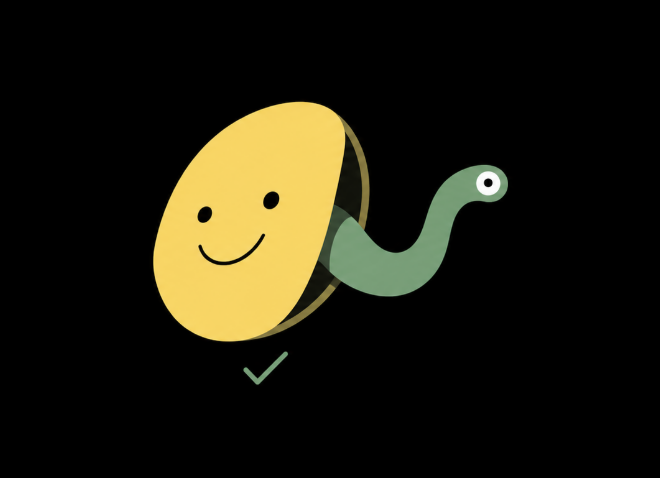

Mutant
A merge gate for agent-written pull requests.
It plants realistic bugs in a PR. If the tests stay green, it hands you a runnable test that proves they miss one. No proof, no block.
The problem
Green only means the code agrees with itself.
When one agent writes the code and the tests, the check on your pull request is no longer a second opinion. It is the same author grading its own homework.
Coverage does not rescue you. A test can execute every line of a function and still assert nothing about the boundary that matters.
The result
100% coverage. Two bugs still got through.
line and branch coverage on an agent's PR. Mutant still proved 2 bugs its tests would miss.
planted bugs caught by the demo PR's own tests. The other 8 each got a runnable proof.
model calls in the 324 line script that decides. Every verdict can be replayed.
per PR on an open model, DeepSeek V4.1 Flash, in the recorded run.
The cent figure comes from one recorded gateway run at $0.0100. The Alan sessions on camera could not read their own token usage, so the README leaves cost out for those.
A proof, not a score
It blocks only when it can show you.
Most mutation testing hands you a percentage. One mutant is worth about seven points, and the set changes every run, so a threshold on that is noise with a config knob. Mutant has no number to tune.
return total > 50
def test_free_shipping_at_exactly_fifty():
assert free_shipping(50) is True
The PR's tests stay green with the bug in. This test passes on the PR and fails on the bug. Posted as a question for the author: is a $50 order meant to ship free?
- 01The proof test passes 3 times on the PR's own code.
- 02It fails 2 times on the planted bug.
- 03The full suite stays green with it added.
How it works
The model never gets a vote.
An open model in Alan
Invents the bugs and writes the candidate proof tests. Its output crosses as two JSON files.
324 lines of Python
Standard library only. Treats those files as untrusted input and runs everything in a throwaway worktree.
- planFind the changed lines and check the baseline is green and stable, three times.
- mutantsThe agent proposes about twelve realistic bugs on those lines.
- runApply each bug, run the tests, restore. Every kill is confirmed by a second run.
- proveFor each survivor, the agent writes one test. The script checks it.
- reportPass, Mixed or Fail, posted to the PR with a commit status.
Two PRs, one codebase
Coverage went up. The gaps did not go away.
| PR 3 | PR 4 | |
|---|---|---|
| Test coverage | 59% | 100% |
| Bugs caught | 4 / 12 | 10 / 12 |
| Proven gaps | 8 | 2 |
| Gate | Fail | Fail |
PR 3 is a deliberately weak demo PR written for this project. PR 4 is what happens when an agent is told to raise coverage. Every line and branch runs, yet nothing asserts that an order of exactly ten units gets the bulk rate.
Built on Alan
An agent does the whole job.
The gate is an Alan skill running on Alan Code with an open model, DeepSeek V4.1 Flash. The agent writes the bugs and the proof tests, runs the script and posts the report on the pull request.
Two independent Alan sessions invented different bugs for the same PR and reached the same verdict.
Honest limits
What it does not do.
- Python and pytest only, with single line mutants.
- It finds the bugs the model thinks of. The model's blind spots are the gate's blind spots.
- Proof tests lock in today's behavior, which is why they ship as questions and never as commits.
- Never run it on pull requests from forks. The PR's code executes during the run.
See it yourself